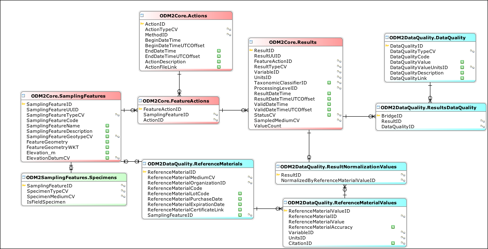
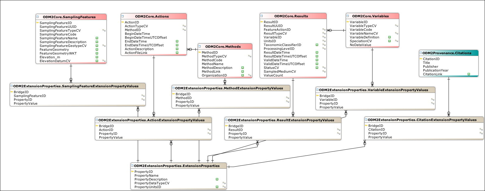
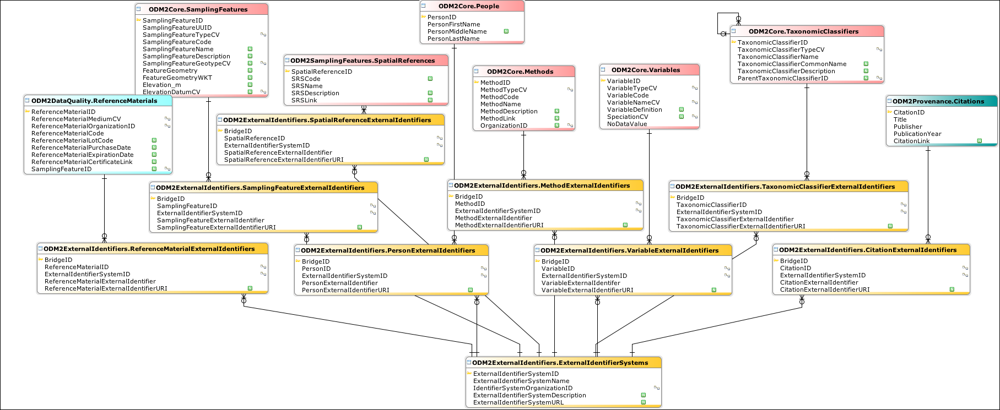
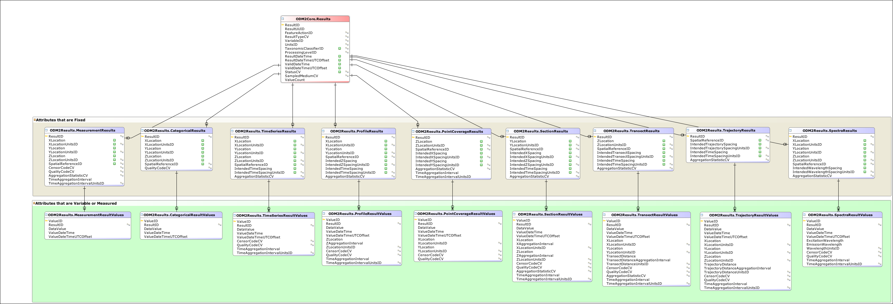

| ODM2 [ODM2_DBWrench_Schema.xml] |
| Home | | | Tables | | | Schemas | | | Diagrams | | | Foreign Keys | | | Indexes |
| ODM2Annotations |
|
| ODM2Core |
 |
| ODM2CV |
 |
| ODM2DataQuality |
|  |
| ODM2Equipment |
 |
| ODM2ExtensionProperties |
|  |
| ODM2ExternalIdentifers |
|  |
| ODM2LabAnalyses |
| ODM2Overview |
 |
| ODM2Provenance |
 |
| ODM2Results |
|  |
| ODM2SamplingFeatures |
 |
| ODM2Sensors |
 |